Getting started with BookLyre
BookLyre reads your ebooks aloud with a different voice for every character. Everything happens on your iPhone or iPad, so it works offline and your books never leave your device.
1. Add a book
- Tap + in your Library.
- Choose a DRM-free EPUB from Files. You can also share an EPUB to BookLyre from another app, or add audiobook files (M4B, M4A, MP3, AAC) you already own.
- BookLyre reads the book, finds its chapters and detects the characters. Longer books take a moment.
BookLyre can't open books protected by DRM, which includes most books bought from the big ebook stores. Look for DRM-free editions from authors and publishers, or try public-domain classics. A sample book is included so you can hear the full cast straight away.
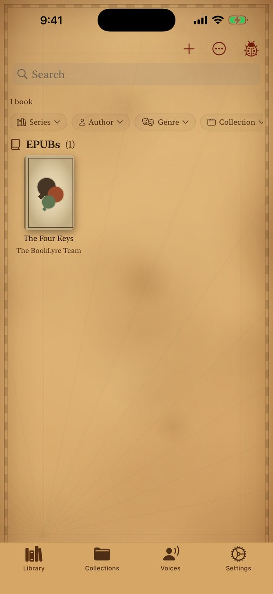
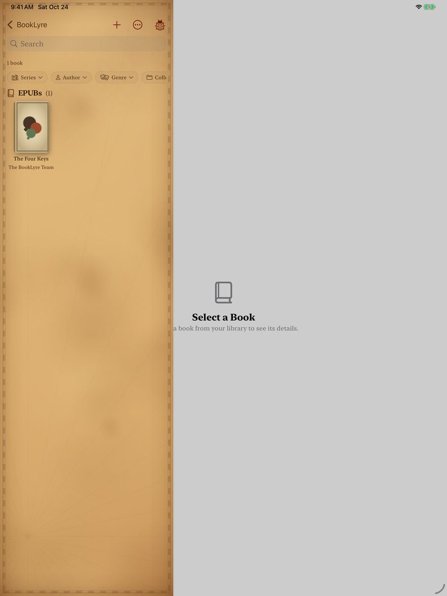
Your Library. Tap + to add a book; the sample book is already here.
2. Meet the cast
Open a book and go to Characters. You'll see everyone BookLyre found, how many lines each one has, and the voice they've been given.
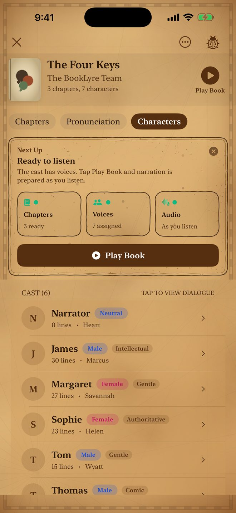
- Tap a character to change their voice. Pick any voice and preview it first.
- Auto-Assign gives everyone a voice that suits them. Clean Up merges duplicates (like "Liz" and "Elizabeth").
- The Narrator reads everything that isn't dialogue.
Character detection is automatic and won't always be perfect. If a line goes to the wrong person, you can fix it.
Browse the voices
Open the Voices tab and tap Voice Catalog to hear every voice that comes with BookLyre. Tap ▶ to preview one. Each voice is tagged with its gender, age, accent and character, like Bass, Gentle or Rough.
The switch next to a voice decides whether Auto-Assign can pick it. Turn off any you don't like and BookLyre won't give them to new characters, but you can still choose them yourself for a particular character.
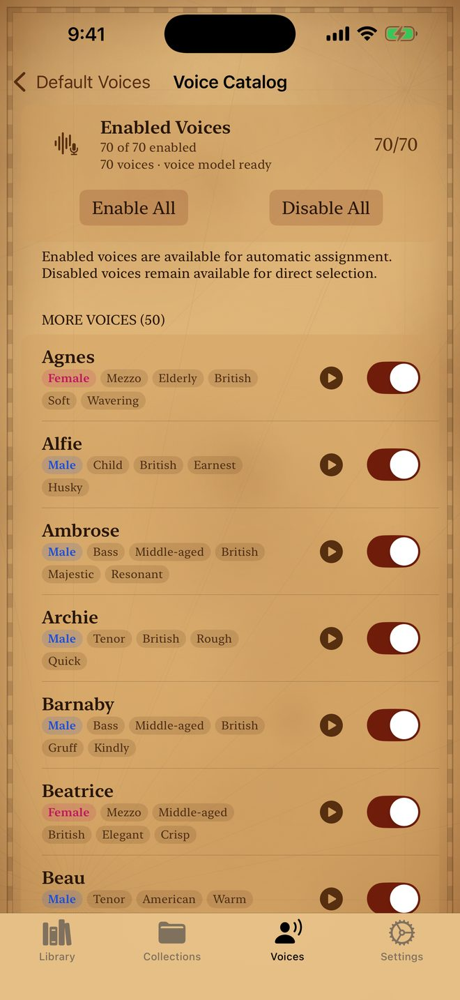
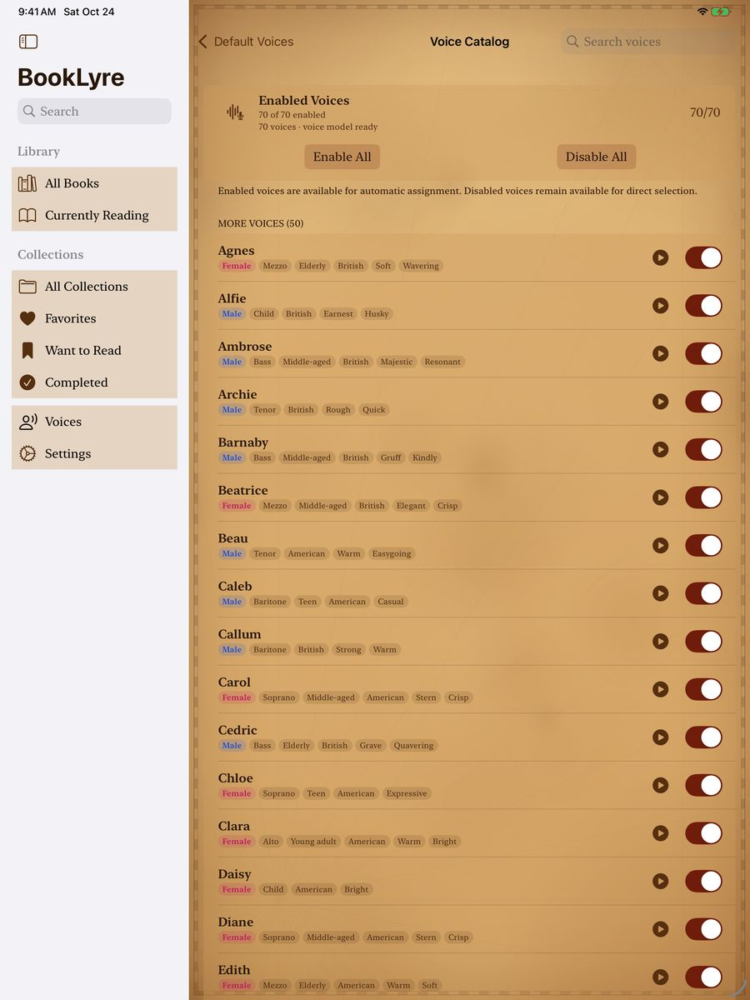
The Voice Catalog. Preview any voice, and choose which ones Auto-Assign may use.
Choose the voices new books start with
The rest of the Voices tab sets your defaults for every book you add from now on.
- Narrator: the voice that reads everything that isn't dialogue. It's Heart unless you pick another.
- Male voices and Female voices: add your favourites in order. The man with the most lines gets your first male voice, the next gets the second, and so on. The woman with the most lines gets your first female voice. Characters beyond your list get a voice automatically. Drag to reorder.
These defaults apply to new imports. Books already in your library keep their voices. To change those, open the book and go to Characters. A voice you pick inside a book always wins over the defaults, and only changes that book.
3. Listen
Open a book and tap Play Book, or tap ▶ next to any chapter to start there. Narration is prepared as you listen, so you can start right away.
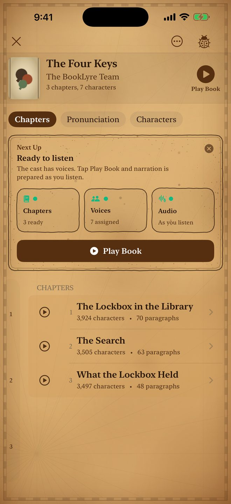
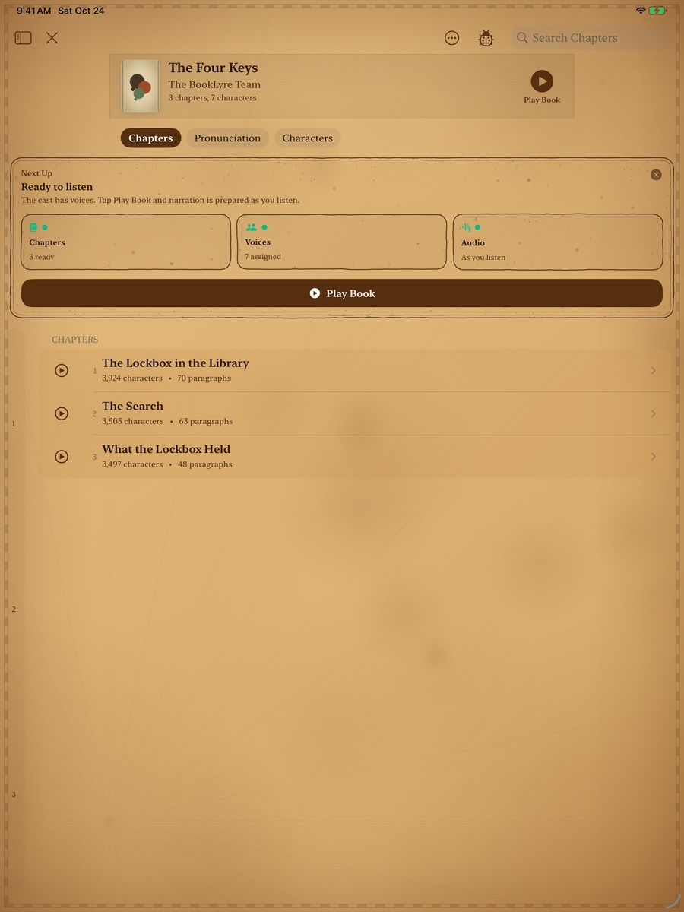
A book's page: tap Play Book, or jump to a chapter.
- Speed: tap the speed button for anything from 0.5× to 2.5×.
- Sleep Timer: 5 to 60 minutes, or the end of the chapter or book.
- Bookmarks: tap the bookmark icon to save your place. Find them all under Bookmarks.
- Read Along: open Read Along while playing to see the text highlighted in time with the voice.
- Playback keeps going in the background and from the Lock Screen, Control Center, and AirPods.


4. Keep reading in a floating window (Picture in Picture)
BookLyre can keep the words in front of you while you use other apps. The floating window shows the book's current paragraph with the phrase being spoken highlighted, and it follows along as the narration plays.
Open the window
- Start playing a book.
- Swipe up from the bottom of the screen to go Home, or switch to another app.
- The words pop out into a small floating window on top of whatever you're doing. Narration keeps playing.
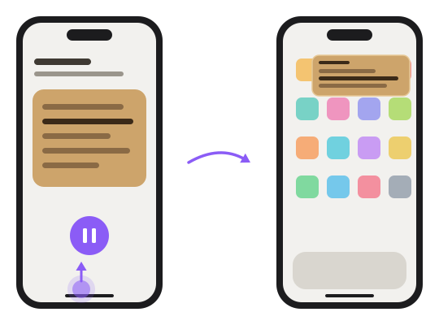

Resize it
- Pinch the window with two fingers. Spread your fingers apart to make it bigger, or pinch them together to make it smaller.
- Double-tap the window to jump between its small and large sizes.
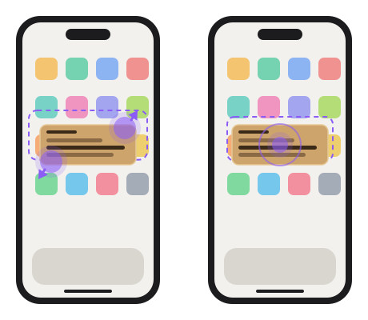
Move it
- Drag the window to any corner of the screen. Let go and it snaps into the nearest corner, so it never sits in the middle of what you're doing.
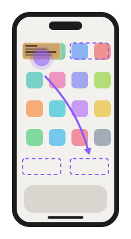
Move it out of the way (off the screen)
When you need the whole screen but don't want to stop listening, tuck the window away instead of closing it.
- Drag the window off the left or right edge of the screen, or flick it toward the edge.
- It slides out of view and leaves a small tab with an arrow on that edge. The narration keeps playing while it's hidden.
- To bring it back, tap the tab or drag it back onto the screen.
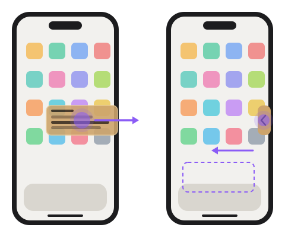
Use the controls
- Tap the window once to show its controls: play/pause in the middle, return to BookLyre in the top-left corner, and close (X) in the top-right corner.
- Tap X to close the window, or come back to BookLyre and it closes by itself. Closing the window doesn't stop the narration: pause from the Lock Screen, Control Center, your AirPods, or the app.
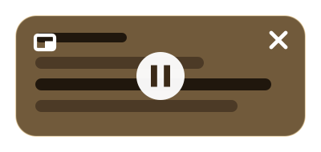
If the window doesn't appear when you leave the app, check that a book is actually playing, then open iOS Settings → General → Picture in Picture and make sure Start PiP Automatically is on. Turn it off there if you'd rather not have the window at all; the narration still plays in the background either way.
On iPad the window works the same way.
5. Full cast
Every book plays with its full cast: a different voice for each character, with the narrator reading everything else. It's all included in the app's price, with no in-app purchases or subscriptions. Every voice comes with the app, so there's nothing extra to download.
6. Prepare ahead and manage space
- Prepare a whole book in advance: tap ⋯ on the book's page, then Prepare Audiobook, so listening never waits. Or choose Prepare Overnight While Charging and BookLyre does it while your device charges.
- The app needs about 1 GB, plus space for prepared audio. See and delete each book's audio in Settings → Storage. Audio for books you haven't opened in a while is cleared automatically and prepared again when you come back.
- Preparing audio is demanding work, so your device may get warm. BookLyre slows down by itself if it gets hot.
7. Organize your library
Group books into Collections, follow series in order, and pick up where you left off in Currently Reading. Long-press any book for quick actions.
Need help?
Tap Spotted a bug? in the app, or email support@booklyre.com.